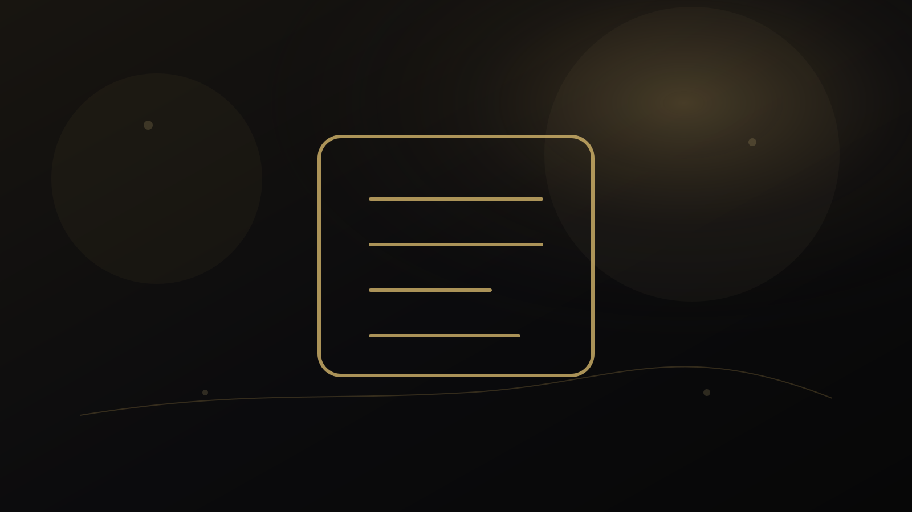

راهنمای پژوهش و انتشار
ویرایش انگلیسی دانشگاهی چیست و چه تفاوتی با Grammar Correction دارد؟
متن ممکن است از نظر گرامری درست باشد اما هنوز برای خواننده علمی دشوار، مبهم یا بیش از حد ترجمهای به نظر برسد. Academic English Editing باید زبان را در خدمت استدلال قرار دهد و همزمان مرز میان ویرایش زبان و مداخله در محتوای علمی را حفظ کند.

ویرایش انگلیسی دانشگاهی را از خود مسئله شروع کنیم
متن ممکن است از نظر گرامری درست باشد اما هنوز برای خواننده علمی دشوار، مبهم یا بیش از حد ترجمهای به نظر برسد. Academic English Editing باید زبان را در خدمت استدلال قرار دهد و همزمان مرز میان ویرایش زبان و مداخله در محتوای علمی را حفظ کند.
در این راهنما هدف ارائه نسخه آماده نیست. مسئله به اجزای کوچکتر تقسیم میشود تا معلوم باشد چه اطلاعاتی داریم، چه چیزی هنوز نامطمئن است و کدام نتیجه واقعاً از شواهد پشتیبانی میشود. این شیوه هم برای تصمیم انسانی مفیدتر است و هم از تبدیل یک شاخص یا یک تجربه به حکم کلی جلوگیری میکند.
پنج لایهای که در ویرایش انگلیسی دانشگاهی باید جداگانه دیده شوند
۱. وضوح
جمله باید رابطه مفهومی را روشن کند، نه فقط از نظر دستور درست باشد.
۲. انسجام
پیوند میان جمله و پاراگراف باید مسیر استدلال را برای خواننده قابل دنبال کردن کند.
۳. دقت واژگانی
واژه تخصصی باید معنای مورد نظر را دقیق منتقل کند و صرفاً «رسمیتر» به نظر نرسد.
۴. لحن علمی
قطعیت، احتیاط و ارجاع به شواهد باید با نوع ادعا هماهنگ باشد.
۵. صدای نویسنده
ویرایش نباید متن را به نثر عمومی و بیهویت تبدیل کند.
اهمیت این تفکیک در آن است که دو مورد میتوانند همزمان درست باشند اما پیام یکسانی نداشته باشند. به همین دلیل، بهتر است پیش از جمعبندی، برای هر لایه مشخص کنیم «شاهد چیست؟»، «حد تفسیر کجاست؟» و «چه اطلاعاتی ممکن است نتیجه را تغییر دهد؟»
خطاهای رایج؛ چه چیزهایی کیفیت تصمیم را پایین میآورند؟
۱. جایگزینی انبوه واژهها با مترادفهای سنگین
این خطا معمولاً بخشی از اطلاعات را بیش از اندازه پررنگ میکند و امکان دیدن تصویر کامل را کاهش میدهد. راه بهتر این است که ادعا یا تصمیم به شواهد مشخص و محدودیتهای همان شواهد متصل شود.
۲. اصلاح زبان بدون توجه به معنای علمی جمله
این خطا معمولاً بخشی از اطلاعات را بیش از اندازه پررنگ میکند و امکان دیدن تصویر کامل را کاهش میدهد. راه بهتر این است که ادعا یا تصمیم به شواهد مشخص و محدودیتهای همان شواهد متصل شود.
۳. تغییر ادعای پژوهش به جای علامتگذاری ابهام برای نویسنده
این خطا معمولاً بخشی از اطلاعات را بیش از اندازه پررنگ میکند و امکان دیدن تصویر کامل را کاهش میدهد. راه بهتر این است که ادعا یا تصمیم به شواهد مشخص و محدودیتهای همان شواهد متصل شود.
خطاهای بالا معمولاً از میل طبیعی ما به سادهکردن یک مسئله پیچیده میآیند. سادهسازی لازم است، اما نباید اطلاعاتی را حذف کند که اگر دیده میشدند، تصمیم یا تفسیر تغییر میکرد.
یک مسیر عملی برای حرکت از سؤال به اقدام
این مسیر عمداً مرحلهای است. اگر در یکی از مراحل شواهد کافی وجود ندارد، بهتر است همانجا توقف کنیم و اطلاعات تازه جمع کنیم تا اینکه با قطعیت ظاهری به مرحله بعد برویم.
چه زمانی کمک حرفهای معنا دارد؟
اگر مسئله به اطلاعات فردی، پرونده خصوصی، تحلیل تخصصی یا قضاوتی وابسته است که با مطالعه عمومی حل نمیشود، استفاده از خدمت حرفهای میتواند منطقی باشد. در مقابل، اگر پرسش عمومی است، مطالعه راهنماها و منابع رسمی باید نقطه شروع باقی بماند.
مسئولیت محتوای علمی، داده و ادعا با نویسنده باقی میماند و ویرایش زبان تضمین پذیرش نیست.
پرسشهای متداول درباره ویرایش انگلیسی دانشگاهی
ویرایش انگلیسی دانشگاهی دقیقاً چه مسئلهای را حل میکند؟
این موضوع زمانی مفید است که به یک پرسش یا تصمیم مشخص متصل شود. متن ممکن است از نظر گرامری درست باشد اما هنوز برای خواننده علمی دشوار، مبهم یا بیش از حد ترجمهای به نظر برسد. Academic English Editing باید زبان را در خدمت استدلال قرار دهد و همزمان مرز میان ویرایش زبان و مداخله در محتوای علمی را حفظ کند.
مهمترین خطا در ویرایش انگلیسی دانشگاهی چیست؟
یکی از خطاهای رایج، جایگزینی انبوه واژهها با مترادفهای سنگین است. کیفیت تصمیم زمانی بالاتر میرود که شواهد، محدودیتها و هدف استفاده از نتیجه روشن باشند.
چه زمانی کمک حرفهای برای ویرایش انگلیسی دانشگاهی معنا دارد؟
وقتی پاسخ به اطلاعات فردی، قضاوت تخصصی یا بررسی پرونده وابسته است و راهنمای عمومی برای تصمیم کافی نیست. مسئولیت محتوای علمی، داده و ادعا با نویسنده باقی میماند و ویرایش زبان تضمین پذیرش نیست.
جمعبندی
ویرایش انگلیسی دانشگاهی زمانی بیشترین ارزش را دارد که مسئله، شواهد، محدودیت و اقدام بعدی از هم جدا باشند. نتیجه خوب لزوماً نتیجه قطعی نیست؛ نتیجهای است که بتوان توضیح داد چرا با اطلاعات فعلی قابل دفاع است و چه چیزی ممکن است در آینده آن را تغییر دهد.